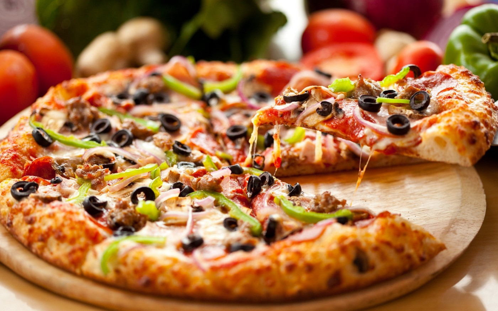

this is not my favorite food
this is not my favorite food
Food, substance consisting essentially of protein, carbohydrate, fat, and other nutrients used in the body of an organism to sustain growth and vital processes and to furnish energy. The absorption and utilization of food by the body is fundamental to nutrition and is facilitated by digestion.
I am very foodie. I love to eat and cook. The food gives us energy. Without food, there is no life. There are so many dishes available in today’s world some like Indian foods like Biryani, Dosa, Pav Bhaji, Pani Puri etc whereas some like western foods like Pizza, Burger, Noodles etc. Among the number of food Pizza is my favorite food because it tastes and smells fabulous. The pizza itself looks so yummy, crispy and so cheesy. There is no better feeling in the world than a warm pizza box on your lap. My love for Pizza is very high. I am always hungry for pizza, be it any time of the day. Cheese is the secret ingredient of any food it makes any food taste yummy. Nearly any ingredient can be put on pizza. Those diced vegetables, jalapenos, tomato sauce, cheese and mushrooms makes me eat more and more like a unique work of art. Every pie is a different shape and size. There are thin crust pies, deep dish pies, and everything in between. There are pies with different cheeses and tomato sauce, or even pies with a completely different base altogether. On every occasion, I celebrate it with pizza style. There are times when I get scolded for having pizza all the time because anything in excess causes harms to our health but a pizza lover will always be a pizza lover. There is something between me and pizza the bond which cannot be broken.

this is not my favorite food